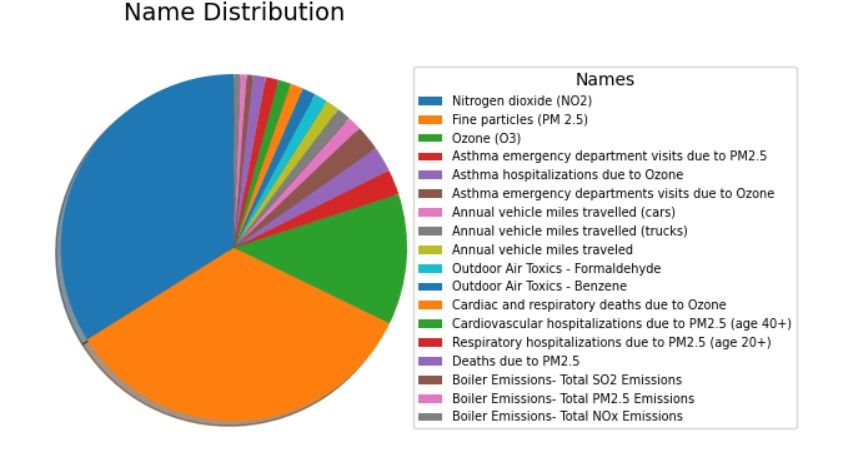
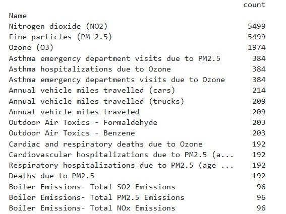
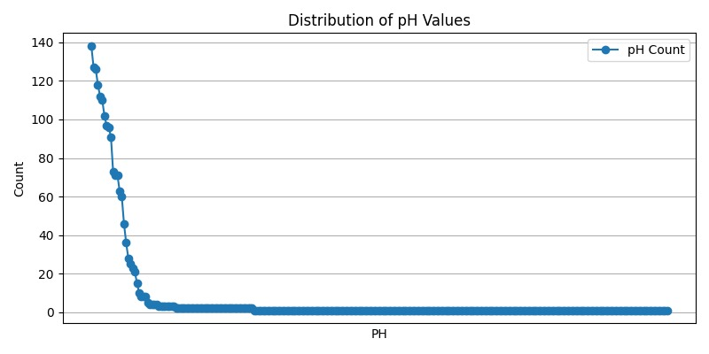
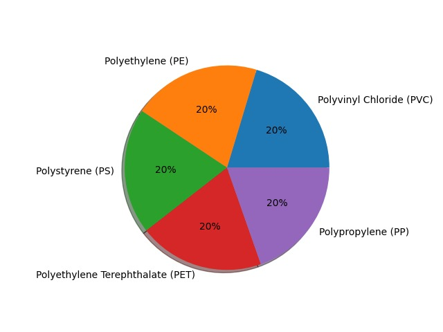
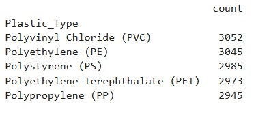
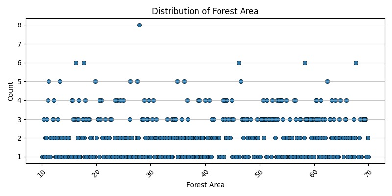

What is Pollution?
Pollution is the introduction of harmful substances into the environment, causing adverse effects on nature and health. It harms living organisms, and degrades the quality of air, water, and soil. It is a global issue caused by both natural processes and human activities, with far-reaching consequences for health, biodiversity, and climate.
Types of Pollution
- Air Pollution: Emissions from vehicles, industries, and burning of fossil fuels release harmful gases like carbon monoxide and particulate matter, leading to respiratory issues and contributing to climate change.


Above is the data distribution of various sources of air pollutants and their count.
- Water Pollution: Contaminants in water bodies lead to marine pollution, harming aquatic life. It is usually a result of human activities. Water bodies include lakes, rivers, oceans, aquifers, reservoirs and groundwater. Water pollution results when contaminants mix with these water bodies. Contaminants can come from one of four main sources. These are sewage discharges, industrial activities, agricultural activities, and urban runoff including stormwater.



Above is the Plastic waste generated in ocean depths based on plastic type and their count
- Land Pollution: Solid waste, pesticides, and harmful substances damage the soil. The graph represents the distribution of forest areas across different regions. The x-axis shows the forest area values, while the y-axis represents their frequency. The visualization helps in understanding the spread and clustering of forest area data points.

Above is the data distribution of the forest area.
Effects of Pollution
Pollution leads to health problems, environmental damage, and loss of biodiversity. Addressing pollution requires collective action, sustainable solutions, and responsible consumption.